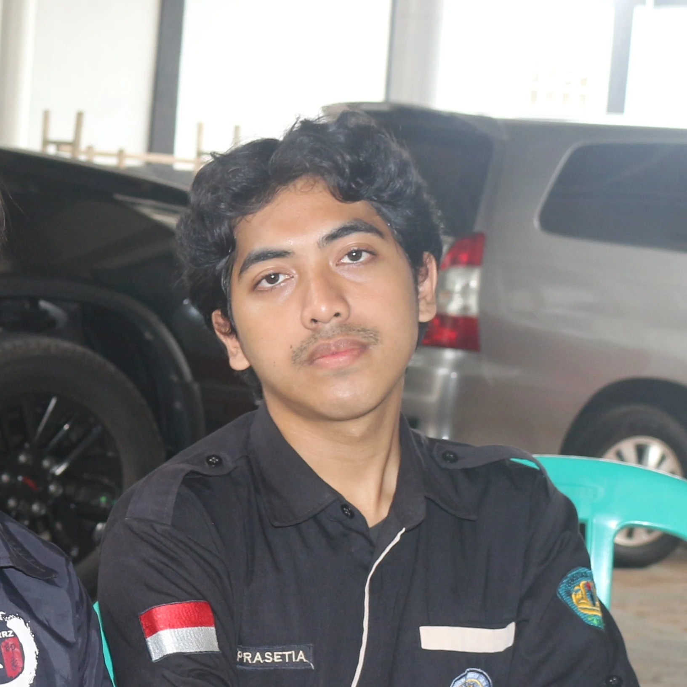

ARCubo
v1.0.0 Rilis Terakhir: 5 Agustus 2026Tentang Aplikasi
ARCubo dikembangkan untuk mengatasi keterbatasan media pembelajaran konvensional 2D dalam memahami struktur serta karakteristik benda langit yang kompleks. Dengan mengintegrasikan teknologi Web Augmented Reality, platform ini memungkinkan pengguna memvisualisasikan objek Tata Surya secara 3D yang realistis dan interaktif, lengkap dengan modul materi serta kuis evaluasi.
Fitur Utama
Augmented Reality
Visualisasi objek 3D benda langit secara interaktif langsung melalui kamera perangkat.
Kuis & Evaluasi
Latihan soal interaktif untuk menguji pemahaman materi astronomi secara mandiri.
Modul Pembelajaran
Materi lengkap dan mendalam mengenai karakteristik setiap planet di Tata Surya.

DIKI PRASETIA
Developer & College Student2113025007
Halo! Saya Diki Prasetia, mahasiswa Program Studi Pendidikan Teknologi Informasi Universitas Lampung. Pengembangan ARCubo merupakan bagian dari penelitian tugas akhir saya yang berfokus pada integrasi teknologi Augmented Reality dalam media pembelajaran berbasis web. Melalui proyek ini, saya berupaya menghadirkan inovasi media interaktif yang dapat membantu pendidik dan siswa dalam mengeksplorasi konsep astronomi secara lebih visual dan intuitif.

Dr. Rangga Firdaus, S.Kom., M.Kom.
Dosen Pembimbing I
Daniel Rinaldi, S.T., M.Eng.
Dosen Pembimbing II

Afif Rahman Riyanda, S.Pd., M.Pd.T.
Dosen Pembahas